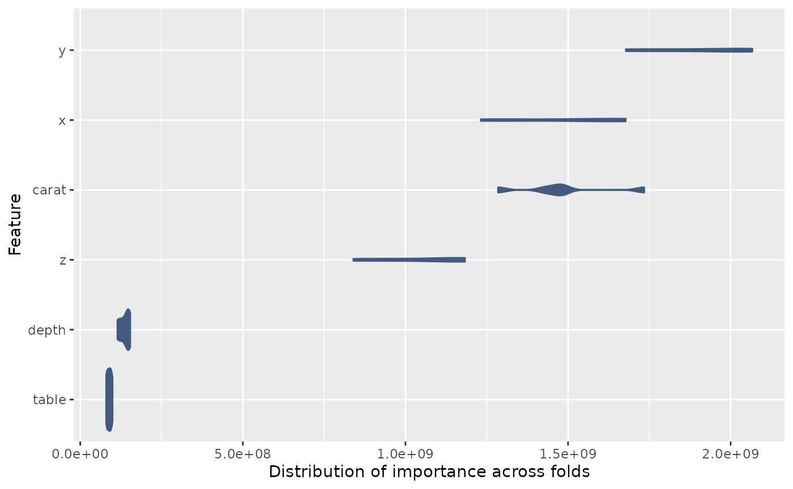

Storing fitted models
In either the default dml_XX() functions, or when
running a custom run_dml(), you have the option to store
all fitted models (across both folds and reps) by setting
store_models = TRUE. This allows you to extract feature
importance measures from the underlying models.
Warning: this can use a lot of memory, especially if you are using a large number of folds and reps.
Saving with store_models = TRUE
library(tiDML)
df <- diamonds_sample(n=500, seed=123)
fit_rf <- dml_rf(
data = df,
y = "price",
d = "is_rated_ideal",
x = c("carat", "depth", "table", "x", "y", "z"),
store_models = TRUE
)Extracting coefficients (linear models)
For linear models (e.g. Lasso), you can extract regression coefficients directly. Under the default settings (5 cross folds, 1 rep) there are 10 sets of regression coefficients: five for treatment and five for outcome.
To access the treatment model for, say, the third crossfold, save
your lasso regression as fit <- dml_XX(...) and then use
the generics package to extract the coefficients:
generics::tidy(fit$m_fit[[3]]).
tiDML’s get_feature_coefs() function is a wrapper around
this which maps across all cross folds to give a single tibble with
coefficients for all folds and reps.
fit_lasso <- dml_enet(
data = df,
y = "price",
d = "is_rated_ideal",
x = c("carat", "depth", "table", "x", "y", "z"),
store_models = TRUE,
mixture = 1
)
get_feature_coefs(fit_lasso)
#> # A tibble: 35 × 5
#> fold model term estimate penalty
#> <int> <chr> <chr> <dbl> <dbl>
#> 1 1 treatment (Intercept) 88.6 0.01
#> 2 1 treatment carat -0.409 0.01
#> 3 1 treatment depth -0.587 0.01
#> 4 1 treatment table -0.918 0.01
#> 5 1 treatment x 0 0.01
#> 6 1 treatment y 0 0.01
#> 7 1 treatment z -0.0137 0.01
#> 8 2 treatment (Intercept) 98.3 0.01
#> 9 2 treatment carat -0.677 0.01
#> 10 2 treatment depth -0.699 0.01
#> # ℹ 25 more rowsExtracting feature importance (tree based models)
Feature importance can be only be extracted for tree based models
(decision trees, random forests, or gradient boosted trees). The
function get_feature_importance() extracts feature
importance measures from all the fitted models and returns a tidy data
frame.
feature_importance <- get_feature_importance(fit_rf, model = "outcome")
#> Warning: Unknown or uninitialised column: `id2`.
#> Unknown or uninitialised column: `id2`.
#> Unknown or uninitialised column: `id2`.
#> Unknown or uninitialised column: `id2`.
#> Unknown or uninitialised column: `id2`.
print(feature_importance)
#> # A tibble: 30 × 3
#> rep variable importance
#> <chr> <chr> <dbl>
#> 1 Fold1 carat 1734464833.
#> 2 Fold1 depth 127880049.
#> 3 Fold1 table 89751947.
#> 4 Fold1 x 1316805359.
#> 5 Fold1 y 1776542407.
#> 6 Fold1 z 1183376993.
#> 7 Fold2 carat 1284648350.
#> 8 Fold2 depth 114125800.
#> 9 Fold2 table 79570451.
#> 10 Fold2 x 1231529000.
#> # ℹ 20 more rowsYou can average importance across folds and reps, or plot the feature importance as a distribution.
library(ggplot2)
feature_importance |>
ggplot(aes(importance, reorder(variable, importance))) +
geom_violin(fill="#425a7f", colour="#425a7f") +
labs(x="Distribution of importance across folds", y="Feature")